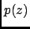
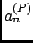

Next: Parameters
Up: Theory and implementation
Previous: MSD within the AR
Contents
The friction coefficient is defined as the integral over
the memory function. In the discrete case we write
As shown in [57], the AR model allows us to express as
where the coefficients  are given by eq. (4.76), and the roots must fulfill the stability
criterion (4.77).
Inserting (4.97) into (4.81) yields
, the z-transform of the discrete memory
function within the AR model,
are given by eq. (4.76), and the roots must fulfill the stability
criterion (4.77).
Inserting (4.97) into (4.81) yields
, the z-transform of the discrete memory
function within the AR model,
Using (4.98) we obtain thus within the AR model
This shows that can be obtained from the zeros of the characteristic polynomial , defined in (4.74).
In the framework of the autoregressive model, nMOLDYN allows one to calculate the VACF, the VACF memory function, the
DOS, the MSD, and the AR coefficients  of the velocity trajectory, averaged over all selected atoms
and three Cartesian coordinates.
Next: Parameters
Up: Theory and implementation
Previous: MSD within the AR
Contents
pellegrini eric
2009-10-06